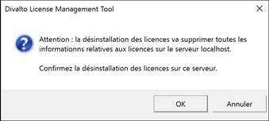

Accueil | DLMT - Gestion des licences nommées | Divalto Licences Management Tool (DLMT) | Désinstaller un serveur de licences
En cas de remplacement d’un serveur de licences par un nouveau serveur, il convient de désinstaller les licences sur l’ancien serveur avant de pouvoir les activer sur le nouveau.
